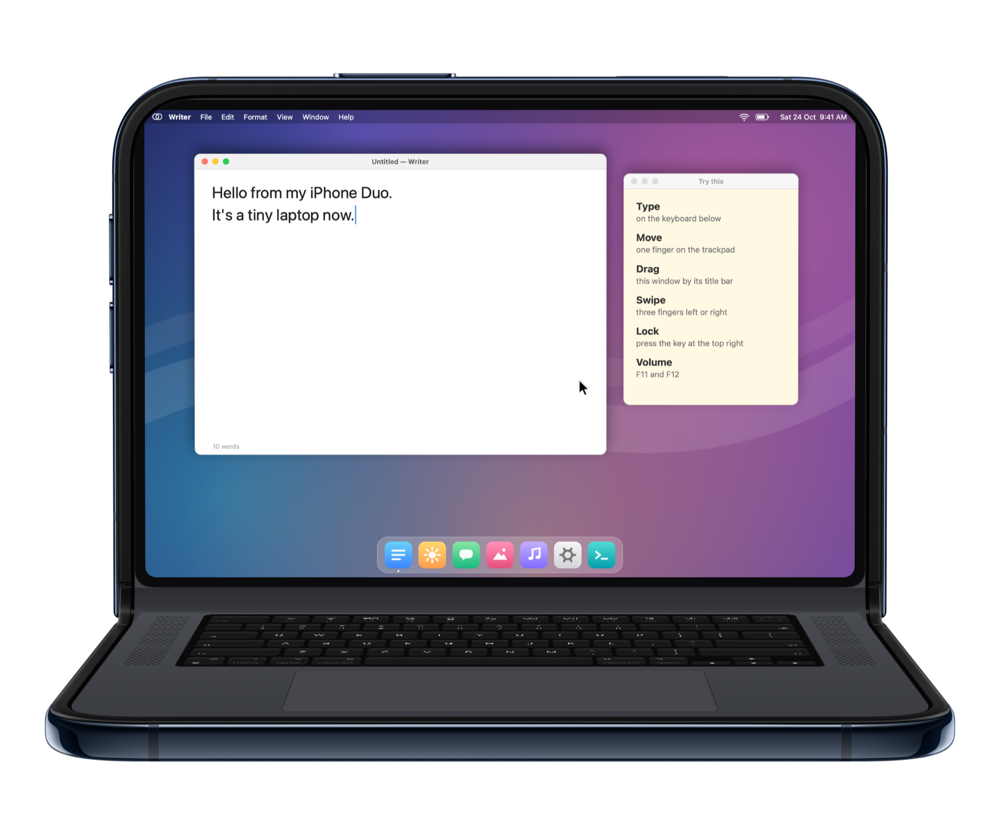
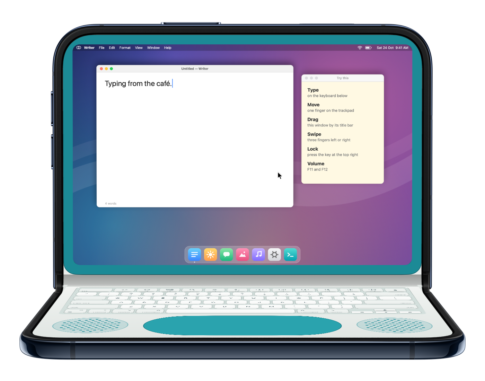
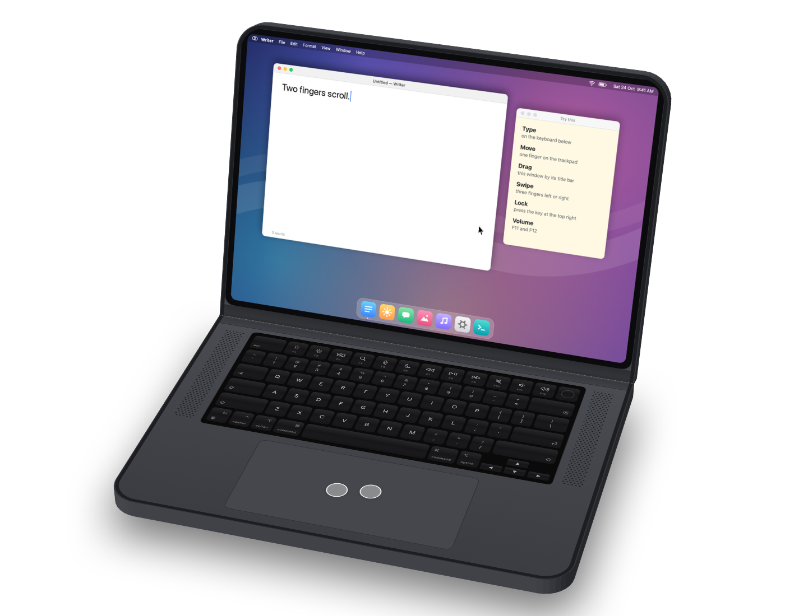
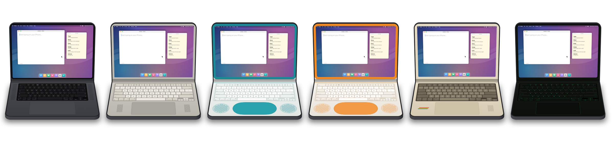

Your iPhone Duo
is a laptop now.
Fold it like a laptop. The top half shows your Mac’s screen, live. The bottom half is a full keyboard and trackpad that control it.
For iPhone Duo and any iPhone with iOS 17. Needs a Mac with macOS 14 or later.

Every key you know.
A full Mac keyboard with the top row for brightness, Mission Control, Spotlight, media, and volume. Hold ⌘ ⌥ ⌃ while you type, or tap to latch. The Touch ID key locks your Mac.
- Real key click sounds and haptics
- A Bluetooth keyboard on the iPhone types on the Mac too
- Dictation, emoji, and other languages through the iPhone keyboard

A real trackpad.
Tap to click, two-finger tap to right-click, scroll with momentum, pinch to zoom, and swipe three fingers to switch desktops.

Your Mac at home. You, anywhere.
At home it finds your Mac on Wi-Fi in a blink. Away, it reaches it over the internet. There’s no account to create and no server watching your screen.
Encrypted end to end
Pair once with a 6-digit code shown on both screens. Every connection after that is encrypted.
Found through your iCloud
DuoBook Host keeps your Mac’s address in your own private iCloud, so your iPhone always knows where it is.
Sets up your router
Turn on “Access from anywhere” on the Mac. It opens the way on most home routers by itself.
Six looks. One tiny Mac.
From today’s black keys to a teal clamshell, office platinum, 80s beige, and a green-screen terminal. Each with its own key sound.

Set up in a minute.
Pair with a code
Open DuoBook on your iPhone, tap your Mac, check the code matches, click Pair.
Fold and type
Open your iPhone Duo like a laptop. That’s it. No Mac handy? Try the built-in demo.
Join the beta.
DuoBook is in testing on TestFlight. Follow @duobook.app for the public link, or write to chitsaz.mehdi77@gmail.com.